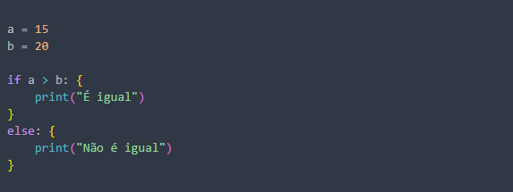

The Logic of 'If/Else' in Building a Narrative
Published on July 9, 2025 • 5 min read
What do a programmer and a video editor have in common? At first glance, almost nothing. One deals with logic, data, and algorithms; the other, with emotion, rhythm, and image. But what if I told you that the fundamental structure of good software and a good story is surprisingly similar?
In this article, I want to explore how conditional logic 'if/else', one of the pillars of programming, is the tool that, invisibly, we use all the time in the editing suite to build a narrative, guide the viewer's emotion, and give meaning to every cut in a music video.
1. What is if/else in Programming?
In essence, if/else is a decision-making process based on a condition. IF the weather forecast says it will rain, THEN I take an umbrella. ELSE, I leave it at home. It is a choice between two paths based on a condition.
2. The if/else in the Editing Suite
-
The Choice of Reaction:
IFthe song's lyric says 'my world collapsed',THENthe cut shows a close-up on the actor's sad face.ELSE, if the lyric is about overcoming, the cut shows the same actor standing up, with a determined expression. -
The Choice of Rhythm:
IFthe drum beat is strong and sharp,THENthe cut between scenes is hard and fast, matching the sonic impact.ELSE, if the sound is a soft, continuous violin, the transition is a slow fade (dissolve), connecting the scenes fluidly. -
The Narrative Choice:
IFwe want to show that the character is feeling lost,THENwe use wider camera shots, showing their loneliness in the vastness of the scenery.ELSE, if we want to show their confidence, we use tighter shots and a low-angle shot (from the bottom up) to empower them.
3. Why Does Thinking This Way Make You a Better Editor?
-
Editing with Intent: Thinking in
'if/else'forces you to justify every cut. It's no longer 'I'll cut here because it looks cool,' but rather 'I'll cut here BECAUSE condition X was met, and this serves purpose Y of the story.' - Efficiency and Focus: This logical structure helps navigate through hours of raw footage. You aren't looking for 'any good shot,' you're looking for the specific shot that satisfies the condition of that moment.
- Clear Communication: It makes communication with directors and clients easier. You can explain your editing choices logically: 'I chose this take because the condition was to show vulnerability.'
Conclusion
In the end, both the programmer and the editor are architects of experiences. Both use logical structures to guide the user (or viewer) through a journey with a beginning, middle, and end. The if/else stops being just a technical tool and becomes a powerful storytelling tool. The next time you watch a music video, try to see the conditions behind each cut. You might be surprised by the logic that exists behind the emotion.